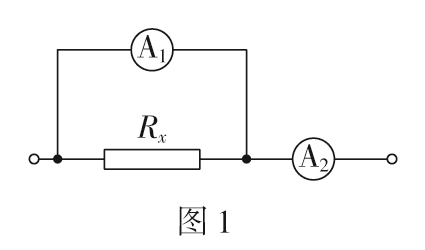
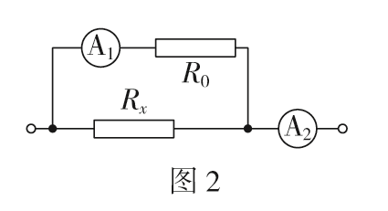
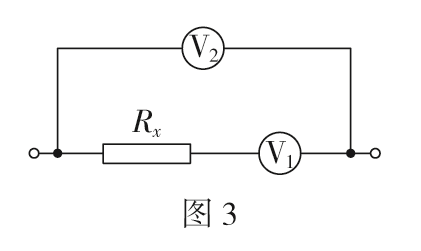
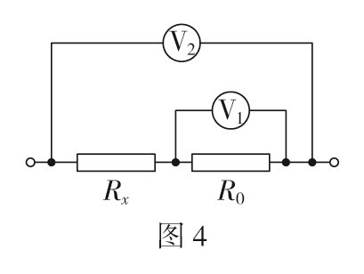
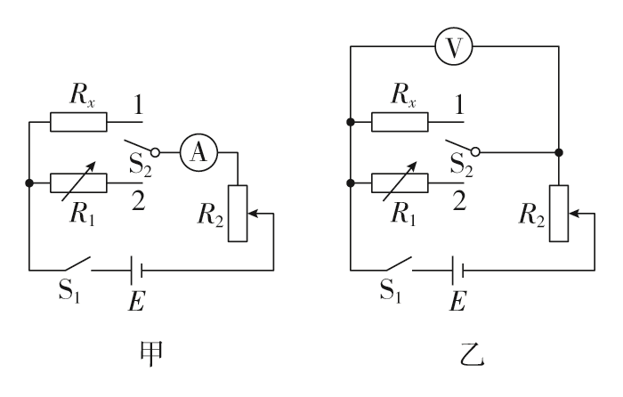

安安法、伏伏法与等效法测电阻
缺表替代 · 安安法 · 伏伏法 · 等效替代
安安法测电阻
原理：若已知电流表的内阻，就可以把它当作“电压表”使用，用安安法代替伏安法测电阻。
电阻测算：
· \(R_x\) 两端电压 \(U_x = I_1 r_1\)；
· 通过 \(R_x\) 的电流 \(I_x = I_2 - I_1\)；
· 由电阻定义 \(\displaystyle R_x = \frac{U_x}{I_x}\)，联立得
适用情况：缺少合适的电压表，但有一块内阻已知的电流表。
说明：若内阻已知的电流表量程不合适，可给它串联一个定值电阻 \(R_0\) 进行改装，把它变成“大量程电压表”。

图 1：安安法测电阻（\(A_1\) 的内阻 \(r_1\) 已知）
· \(R_x\) 两端电压 \(U_x = I_1 r_1\)；
· 通过 \(R_x\) 的电流 \(I_x = I_2 - I_1\)；
· 由电阻定义 \(\displaystyle R_x = \frac{U_x}{I_x}\)，联立得
\(\displaystyle R_x = \frac{I_1 r_1}{I_2 - I_1}\)
适用情况：缺少合适的电压表，但有一块内阻已知的电流表。
说明：若内阻已知的电流表量程不合适，可给它串联一个定值电阻 \(R_0\) 进行改装，把它变成“大量程电压表”。

图 2：电流表串联定值电阻 \(R_0\) 改装成电压表使用
伏伏法测电阻
原理：若已知电压表的内阻，就可以把它当作“电流表”使用，用伏伏法代替伏安法测电阻。
电阻测算：
· \(R_x\) 两端电压 \(U_x = U_2 - U_1\)；
· 通过 \(R_x\) 的电流 \(I_x = \dfrac{U_1}{r_1}\)；
· 由电阻定义 \(\displaystyle R_x = \frac{U_x}{I_x}\)，联立得
适用情况：缺少合适的电流表，但有一块内阻已知的电压表。
说明：若内阻已知的电压表量程不合适，可给它并联一个定值电阻 \(R_0\) 进行改装。

图 3：伏伏法测电阻（\(V_1\) 的内阻 \(r_1\) 已知）
· \(R_x\) 两端电压 \(U_x = U_2 - U_1\)；
· 通过 \(R_x\) 的电流 \(I_x = \dfrac{U_1}{r_1}\)；
· 由电阻定义 \(\displaystyle R_x = \frac{U_x}{I_x}\)，联立得
\(\displaystyle R_x = \frac{(U_2 - U_1) r_1}{U_1}\)
适用情况：缺少合适的电流表，但有一块内阻已知的电压表。
说明：若内阻已知的电压表量程不合适，可给它并联一个定值电阻 \(R_0\) 进行改装。

图 4：电压表并联定值电阻 \(R_0\) 改装成电流表使用
等效法测电阻
原理：根据等效替代的思想，把待测电阻 \(R_x\) 和电阻箱 \(R_1\) 分别接入电路，调节电阻箱使电路中的电流（或电压）与接 \(R_x\) 时相同，则 \(R_x = R_1\)。
测算步骤（以甲图为例）：
① 将待测电阻 \(R_x\) 接入电路，调节滑动变阻器 \(R_2\)，使电流表指针指到适当位置，读出电流表示数；
② 将电阻箱 \(R_1\) 接入电路，保持滑动变阻器 \(R_2\) 接入阻值不变，调节 \(R_1\) 使电流表示数等于原来记录的数值；
③ 因为 \(R_x\) 与 \(R_1\) 对电路的效果相同，所以 \(R_x = R_1\)。
适用情况：只有一个电表，且有一个可调电阻箱。
说明：等效替代法原理简单，看似没有系统误差，但因为电阻箱不能连续调节，实际操作中很难保证电表读数完全不变。

图 5：等效法测电阻电路图（甲：电流表方案；乙：电压表方案）
① 将待测电阻 \(R_x\) 接入电路，调节滑动变阻器 \(R_2\)，使电流表指针指到适当位置，读出电流表示数；
② 将电阻箱 \(R_1\) 接入电路，保持滑动变阻器 \(R_2\) 接入阻值不变，调节 \(R_1\) 使电流表示数等于原来记录的数值；
③ 因为 \(R_x\) 与 \(R_1\) 对电路的效果相同，所以 \(R_x = R_1\)。
适用情况：只有一个电表，且有一个可调电阻箱。
说明：等效替代法原理简单，看似没有系统误差，但因为电阻箱不能连续调节，实际操作中很难保证电表读数完全不变。
闯关练习
高考真题
（安安法）某同学要测量约 \(200\ \Omega\) 的未知电阻 \(R_x\)，实验室提供两块电流表：\(A_1\)（量程 \(30\ \text{mA}\)，内阻 \(r_1 = 10\ \Omega\)）、\(A_2\)（量程 \(100\ \text{mA}\)，内阻约为 \(2\ \Omega\)）。按图 1 连接电路，稳定后读出 \(I_1 = 20\ \text{mA}\)，\(I_2 = 60\ \text{mA}\)，求 \(R_x\)。
答案：\(U_x = I_1 r_1 = 20\times 10^{-3}\times 10 = 0.20\ \text{V}\)，\(I_x = I_2 - I_1 = 40\ \text{mA} = 0.040\ \text{A}\)。
\(R_x = \dfrac{U_x}{I_x} = \dfrac{0.20}{0.040} = 5.0\ \Omega\)。注意本题 \(R_x\) 远小于 \(r_1\) 是出题特例，实际安安法常用于测大电阻。